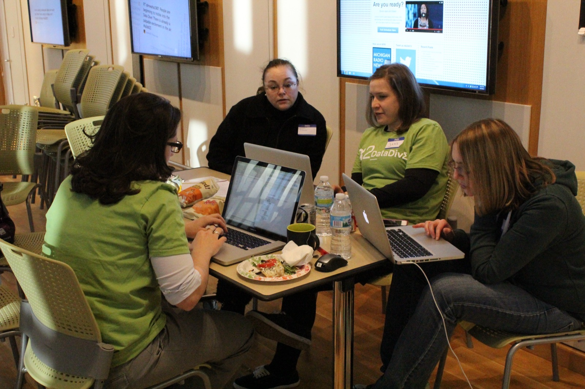

Navigate the Work as It Unfolds
Real-world projects rarely follow a perfect plan. Once your team and partner have agreed on goals and a working process, this phase is about managing the day-to-day work: communicating consistently, adapting to changes, and engaging ethically with the people your project affects.
Why Active Management Matters
The middle of a project is where plans meet reality. Priorities shift, partners' needs evolve, and teams run into unexpected obstacles. How your team responds - not whether problems come up at all - determines whether a project stays on track.
Staying engaged with your partner, checking in with your team regularly, and treating challenges as things to work through together (rather than alone) keeps a project resilient when circumstances change.
Phase 3: During the Experience
Use this phase to manage your project and team, communicate with your partner, navigate challenges and conflict, practice ethical engagement, and give and receive feedback.
Keep Your Partner in the Loop
Regular, honest updates build trust even when progress is slower than planned. Share what is going well, what has changed, and where you need input - do not wait for a scheduled check-in to flag a real problem.
Treat your partner as a collaborator in solving challenges, not just a recipient of status reports. Their context and feedback often make the difference between a good solution and a solution that actually works for them.

During Goals
- Manage projects and teams: Track progress against your plan and adjust tasks, timelines, or roles as the work evolves.
- Communicate with partners: Share consistent updates and proactively raise questions, risks, or changes in scope.
- Navigate challenges and conflict: Address disagreements or setbacks directly and constructively, within your team and with your partner.
- Practice ethical engagement: Respect the communities and organizations affected by your work, and stay accountable to the commitments you made.
- Give and receive feedback: Create space for honest input from teammates and your partner, and use it to improve the work.
- Reflect on learning: Regularly pause to notice what you are learning, not just what you are producing.
Questions to Consider
- Is my team still aligned with the plan we agreed on, and does that plan still make sense?
- Has my partner heard from us recently enough to trust that the project is on track?
- When conflict or disagreement comes up, are we addressing it directly or letting it sit?
- Are we staying accountable to the community or organization our work affects?
- What feedback have I received, and how am I acting on it?
Recommended Practices During the Experience
- Check in regularly: Hold consistent team and partner meetings, even when there is no major update to share.
- Track progress visibly: Keep your project plan up to date so the whole team and your partner can see where things stand.
- Address issues early: Raise concerns, blockers, or disagreements as soon as they come up rather than letting them accumulate.
- Ask for and offer feedback: Build regular feedback into your process instead of waiting until the end of the project.
- Document decisions: Keep a record of key decisions and changes in scope so the team stays aligned over time.
Featured Resources for Active Work
What's Next
As your project moves toward completion, you will shift from active work into wrapping up, evaluating impact, and reflecting on what you learned.